Workshop: Computer Vision
Assignment
Tijdens de workshop Computer Vision worden er visuals gemaakt door middel van het programma Processing. Daarnaast worden er ook opdrachten gemaakt, die de gebruiker laat spelen met het scherm en input van een camera.
Assignment 1
Het eerste assignment is het maken van verschillende vormen, die allemaal andere kleuren hebben en op verschillende plekken staan.
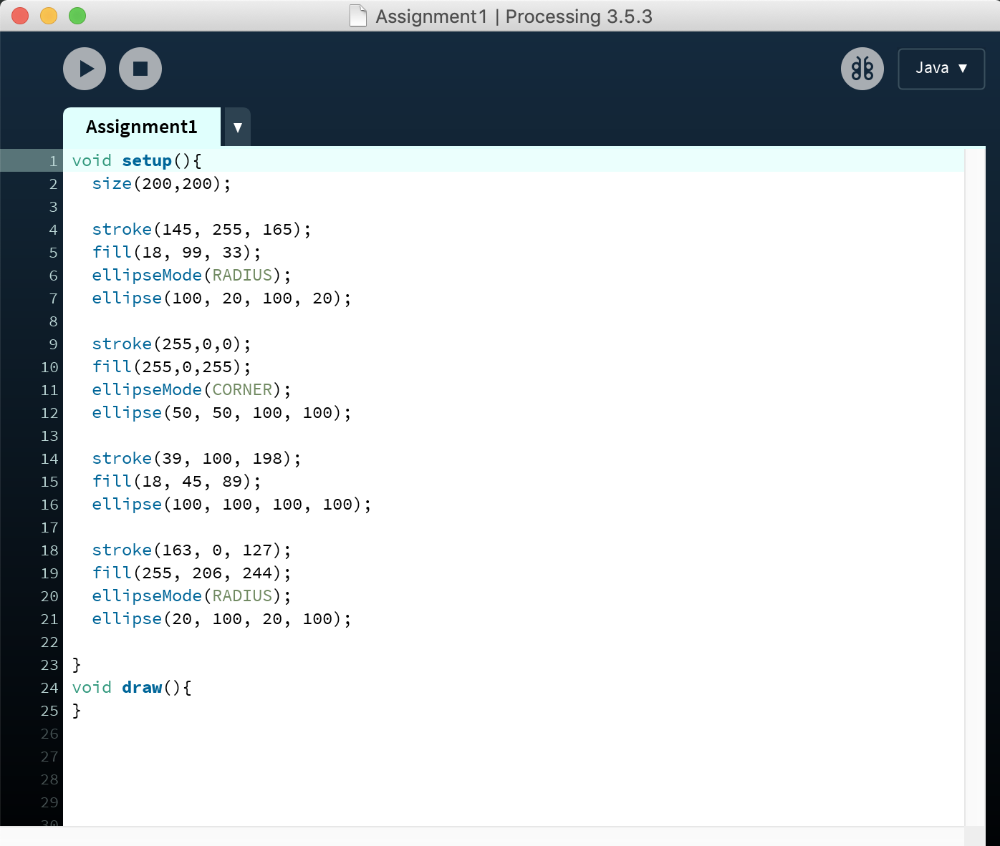 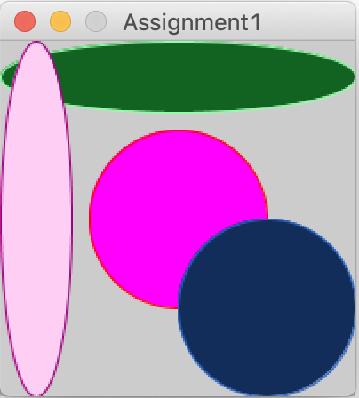Assignment 2
Het tweede assignment is het maken van verschillende vormen. In assignment 1 zijn alleen rondjes visueel gemaakt, hier ook driehoeken, vierkanten, lijnen en een quad.
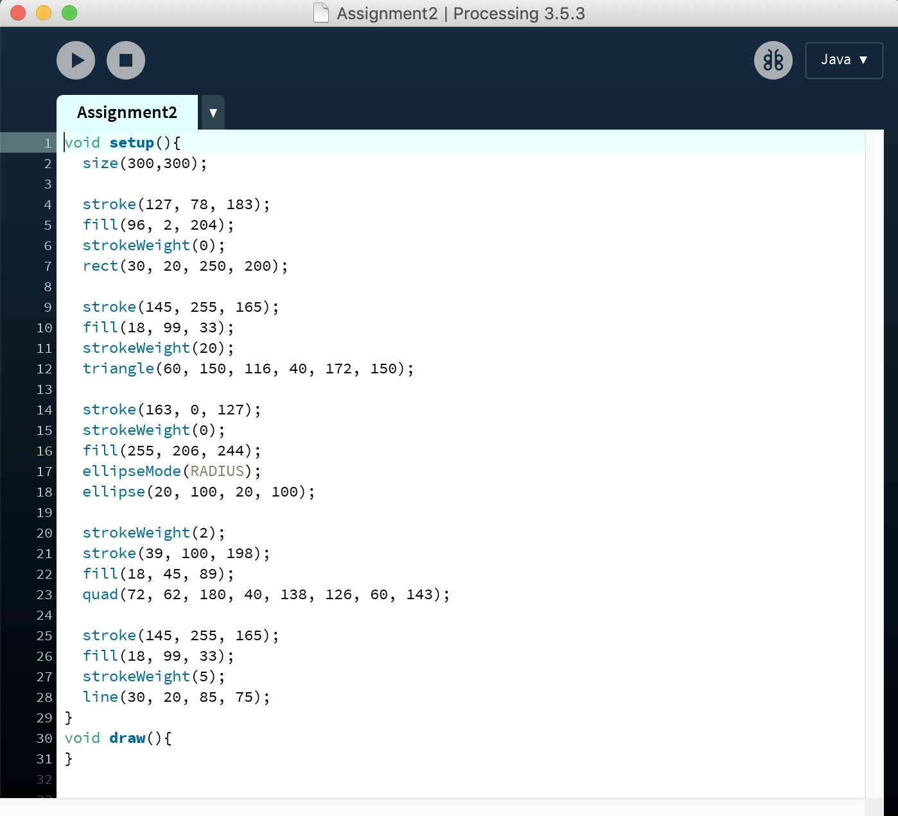 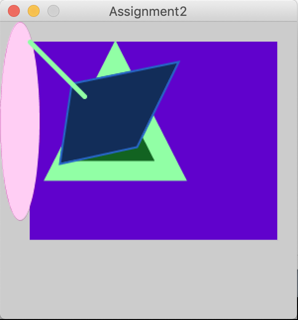Assignment 3
Het derde assignment is het maken van vormen, die iets interessants doen. In deze opdracht zijn een lijn en een rondje aan elkaar verbonden. Het rondje wordt groter en volgt samen met een lijn uiteinde de muis op het scherm.
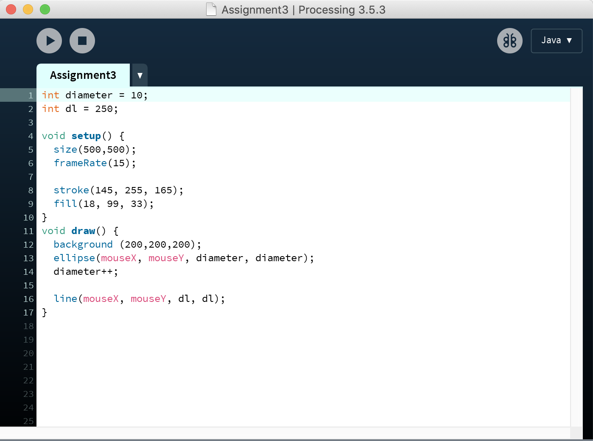Assignment CV1
Het eerste assignment voor Computer Vision is het aanpassen van gegeven code, zodat er een groen rondje om mijn gezicht heen komt. De webcam tracked mijn gezicht. Overal in beeld krijgt een gezicht een groen rondje om zijn of haar gezicht heen.
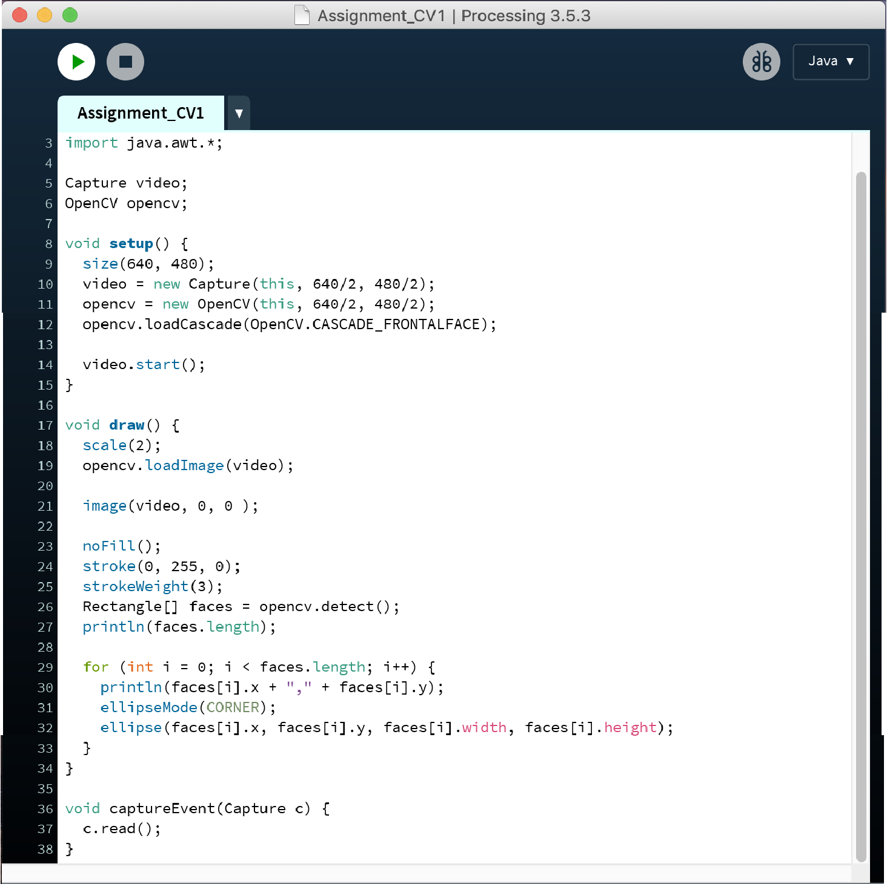 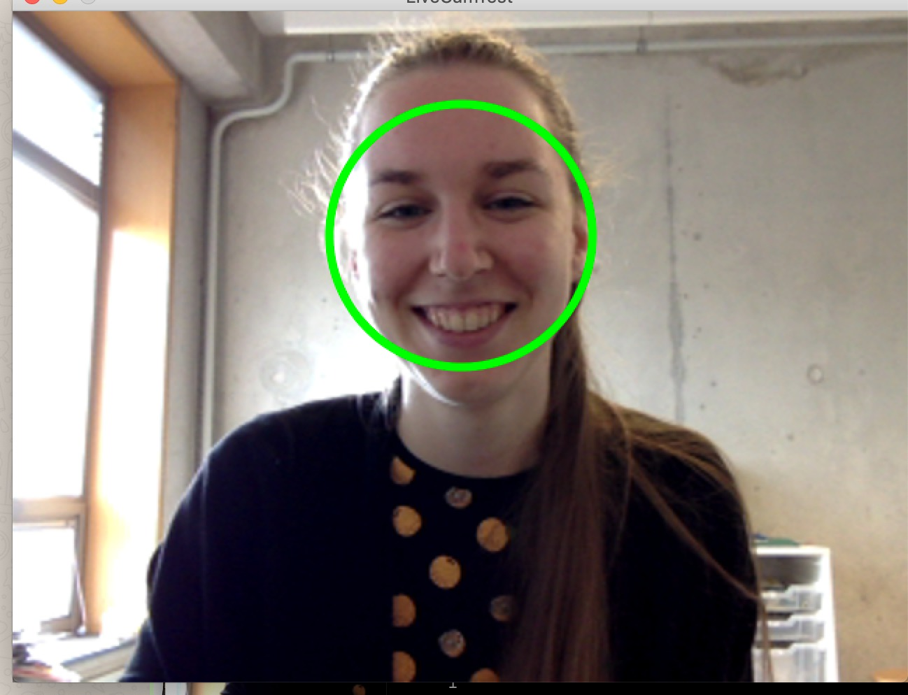Assignment CV2
Het tweede assignment voor Computer Vision is het aanpassen van gegeven code, zodat er een rode neus op de neus wordt geplaatst. De webcam tracked mijn gezicht. Overal in beeld krijgt een gezicht een rode neus.
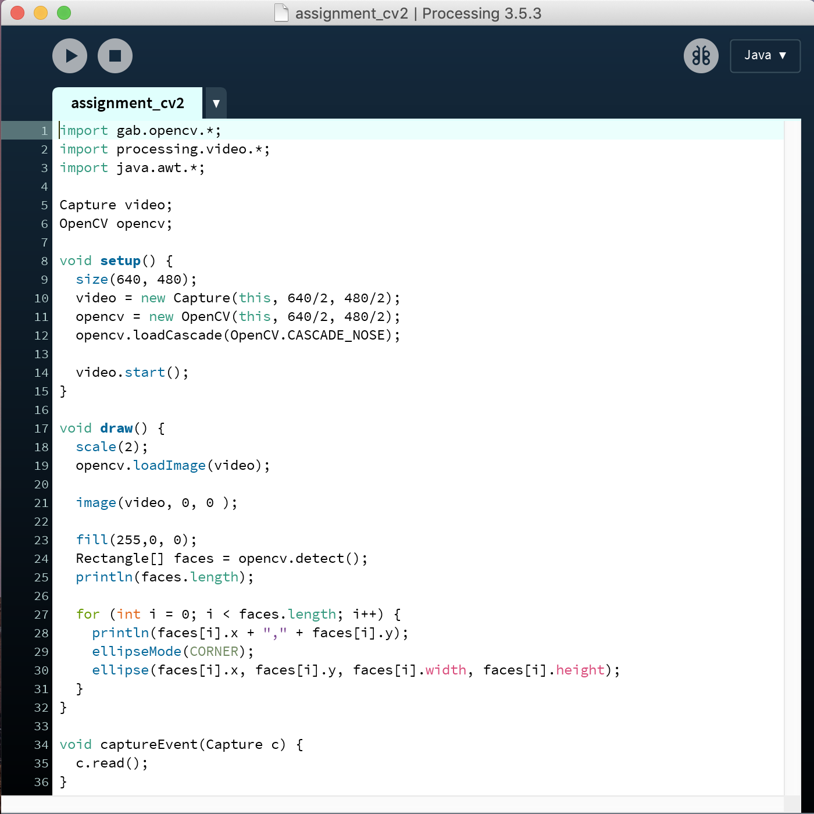 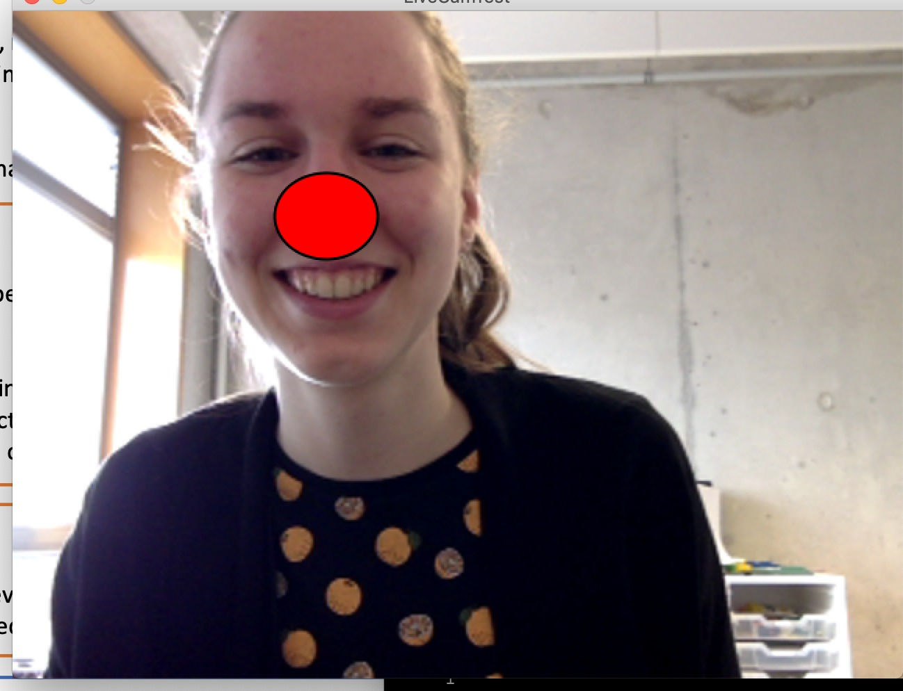Bonus Assignment
Het bonus assignment voor Computer Vision is het aanpassen van gegeven code, zodat er een plaatje over je gezicht heen wordt gezet. Hier heb ik een masker gekozen die volledig over mijn gezicht heen wordt gezet.
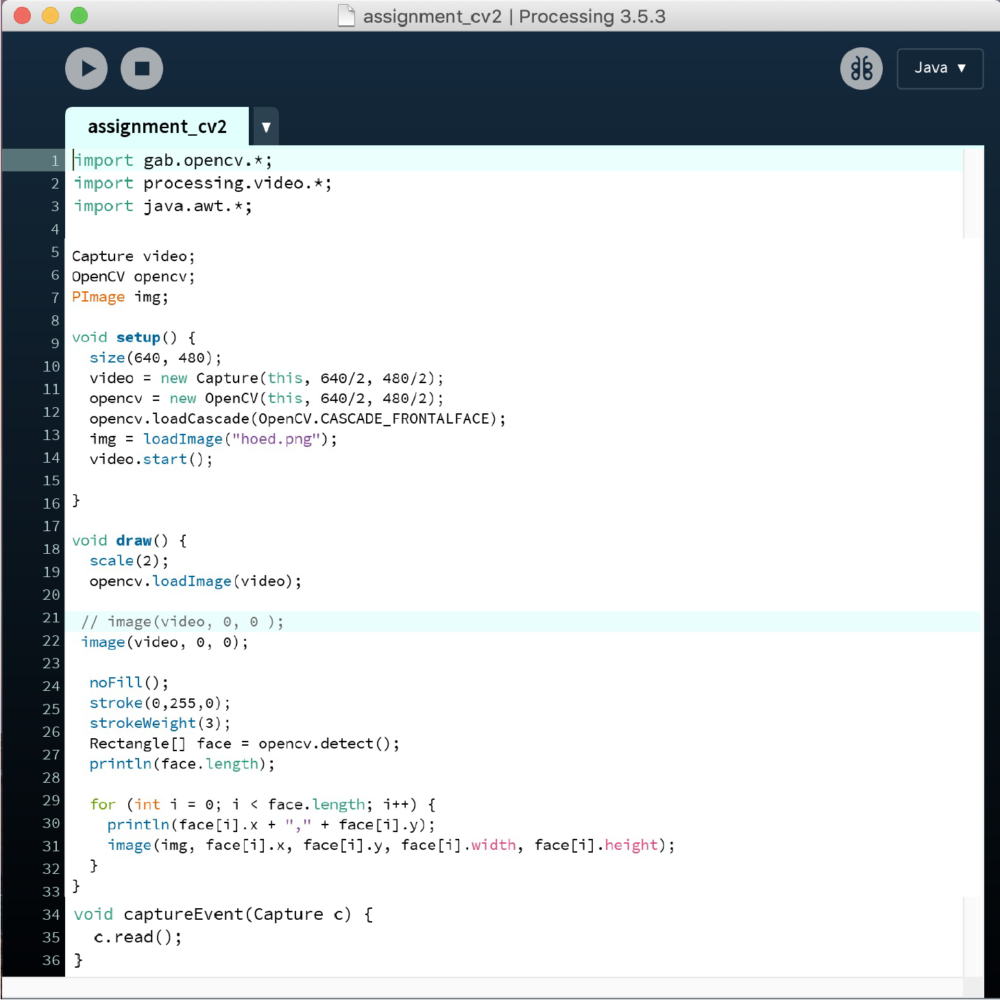 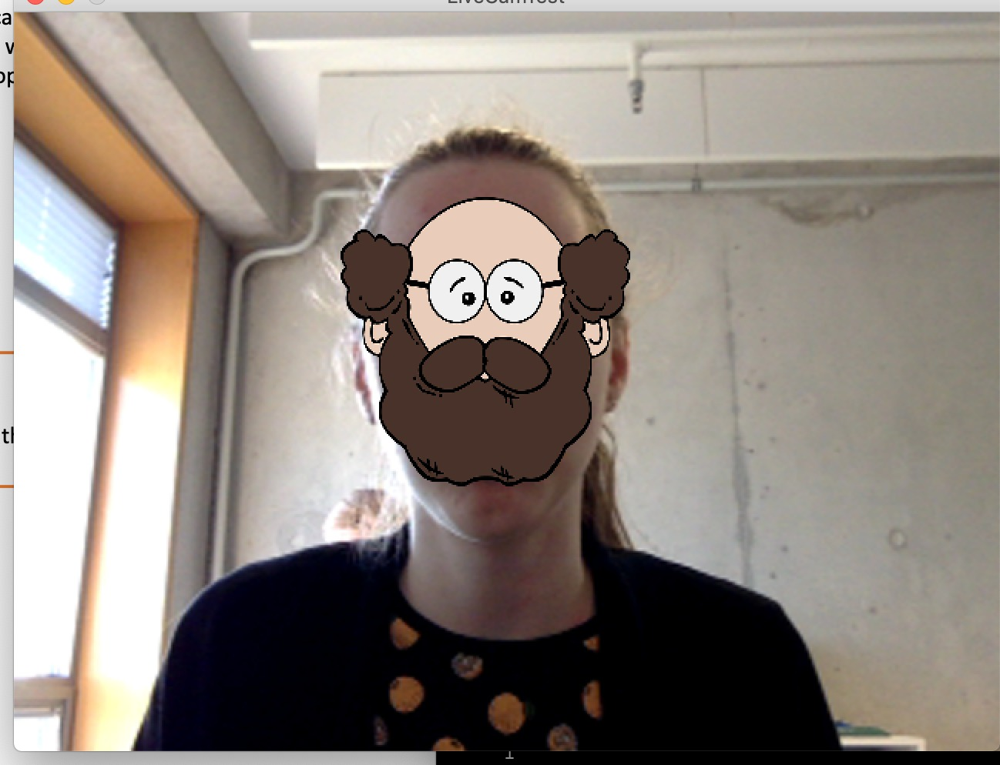Assignment CV3
Het derde assignment voor Computer Vision is het


Assignment CV4
Het vierde assignment voor Computer Vision is het experimenteren met augmented markers. De camera met bijbehorende code reageert op bepaalde markers. Hierop wordt een blauwe kubus geplaatst, waarbij het lijkt of die kubus er echt staat.
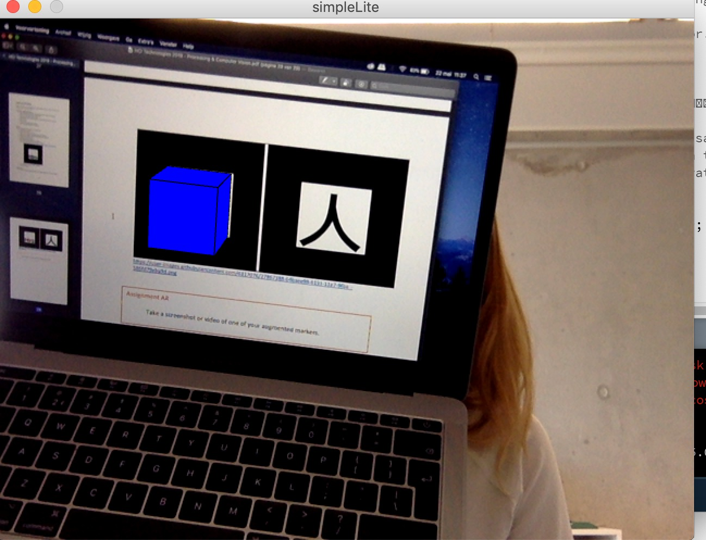 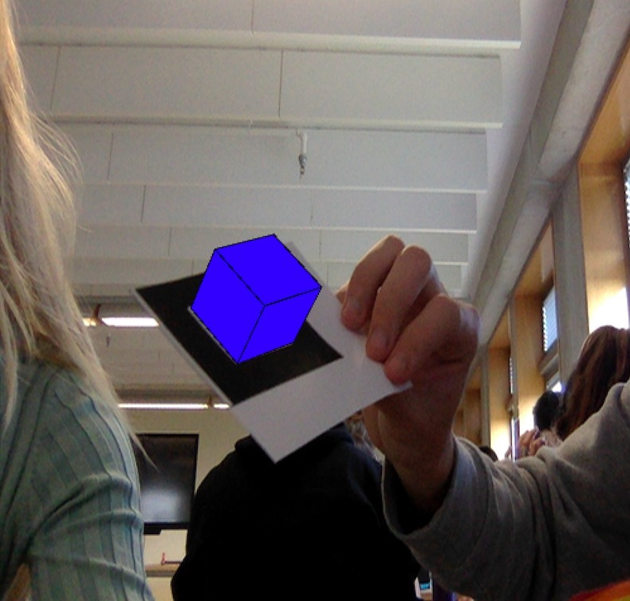